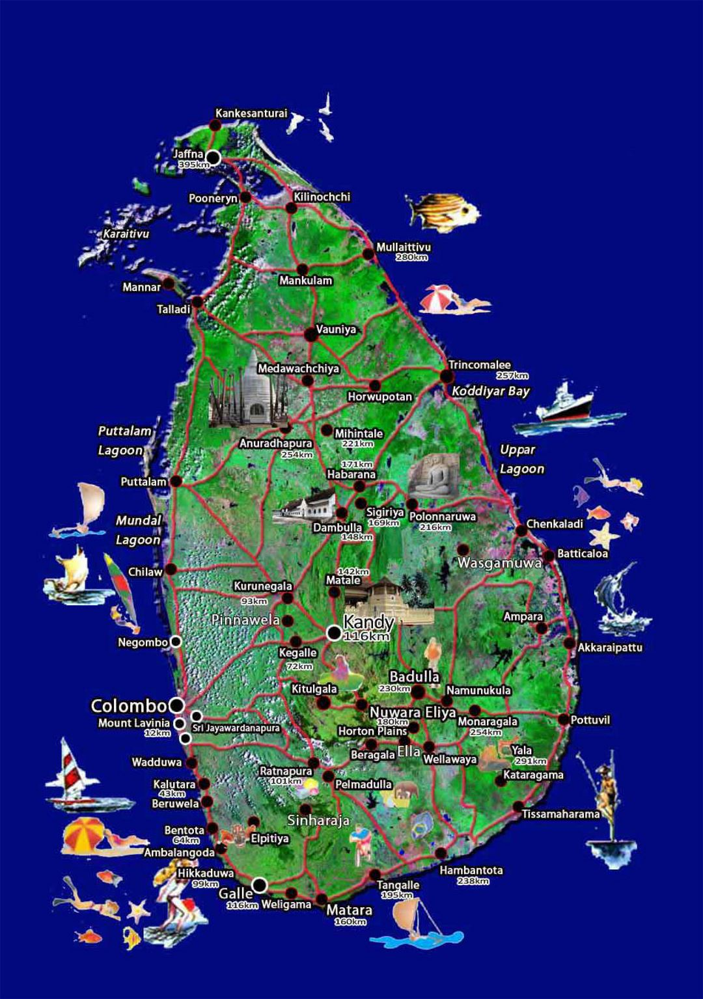
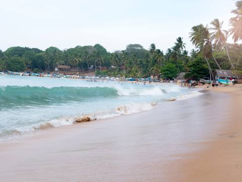
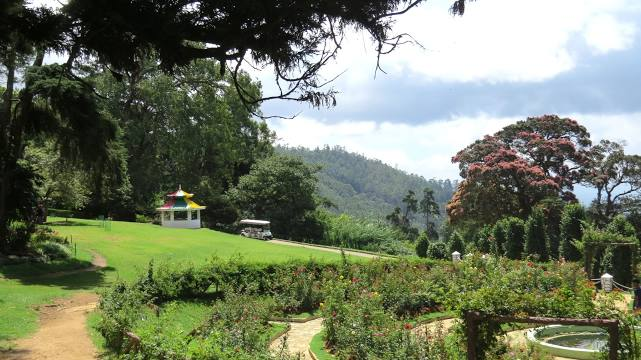
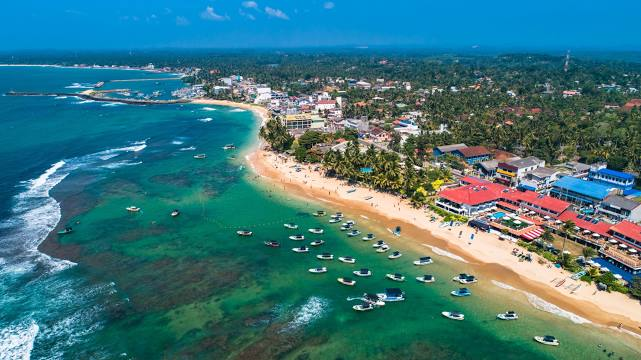
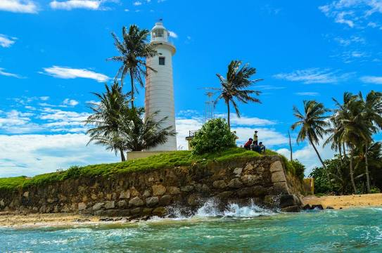

Sigiriya is one of the most valuable historical monuments of Sri Lanka. Referred by locals as the Eighth Wonder of the World this ancient palace and fortress complex has significant archaeological importance and attracts thousands of tourists every year. It is probably the most visited tourist destination of Sri Lanka.The palace is located in the heart of the island between the towns of Dambulla and Habarane on a massive rocky plateau 370 meters above the sea level.
Pearl Of The Indian Ocean
Provinces In SriLanka
- Western Province
- Central province
- Southerns Province
- Uva Province
- Sabaragamuwa Province
- North Western Province
- North Central Province
- Nothern Province
- Eastern Province
Most popular places to visit in SriLanka
1.Sigiriya

2.Yala National park
Yala National Park is the most visited and second largest national park in Sri Lanka, bordering the Indian Ocean. The park consists of five blocks, two of which are now open to the public, and also adjoining parks. The blocks have individual names such as, Ruhuna National Park, and Kumana National Park or 'Yala East' for the adjoining area. It is situated in the southeast region of the country, and lies in Southern Province and Uva Province. The park covers 979 square kilometres and is located about 300 kilometres from Colombo. Yala was designated as a wildlife sanctuary in 1900, and, along with Wilpattu was one of the first two national parks in Sri Lanka, having been designated in 1938. The park is best known for its variety of wild animals. It is important for the conservation of Sri Lankan elephants, Sri Lankan leopards and aquatic birds. There are six national parks and three wildlife sanctuaries in the vicinity of Yala. Among the largest is Lunugamvehera National Park. The park is situated in the dry semi-arid climatic region and rain is received mainly during the northeast monsoon.
3.Jaffna Fort
Jaffna Fort is a fort built by the Portuguese at Jaffna, Sri Lanka in 1618 under Phillippe de Oliveira following the Portuguese invasion of Jaffna. The fort is located near the coastal village of Gurunagar. Due to numerous miracles attributed to the statue of Virgin Mary in the church nearby, the fort was named as Fortress of Our Lady of Miracles of Jafanapatão. It was captured by the Dutch under Rijcklof van Goens in 1658 who expanded it. In 1795, it was taken over by the British, and remained under the control of a British garrison till 1948. As the only large military fort in the country, due to the presence of only government and military buildings within its ramparts, it was garrisoned by a detachment of the Ceylon Army. With the onset of the Sri Lankan Civil War it came under siege on several occasions and was the scene of pitched battles. From 1985 to 1995 it was under the control of the LTTE during this time the LTTE destroyed several of key features to stop the Army getting control due to the site being used to stage attacks but it was recaptured by the Sri Lanka Army in 1995 after a 50-day siege during Operation Riviresa.
4.Sri Pada / Adam's Peak
Adam's Peak is a 2,243 m tall conical mountain located in central Sri Lanka. It is well known for the Sri Pada, i.e., "sacred footprint", a 1.8 m rock formation near the summit, which in Buddhist tradition is held to be the footprint of the Buddha, in Hindu tradition that of Hanuman or Shiva, i.e., "Mountain of Shiva's Light", and in some Islamic and Christian traditions that of Adam, or that of St. Thomas.
5.Arugam Bay Beach

Arugam Bay, known locally as "Arugam Kudah", is situated on the Indian Ocean in the dry zone of Sri Lanka's southeast coast, and a historic settlement of the ancient Batticaloa Territory. The bay is located 117 kilometres south of Batticaloa, 320 kilometres due east of Colombo, and approximately 4 kilometres south of the market town of Pottuvil. The main settlement in the area, known locally as Ullae, is predominantly Muslim, however there is a significant Sri Lankan Tamil and Sinhala population to the south of the village, as well as a number of international expatriates, largely from Europe and Australia. While traditionally fishing has dominated the local economy, tourism has grown rapidly in the area in recent years. Arugam Kudah's literal Tamil translation is "Bay of Cynodon dactylon". Tourism in Arugam Bay is dominated by surf tourism, thanks to several quality breaks in the area, however tourists are also attracted by the local beaches, lagoons, historic temples and the nearby Kumana National Park.
6.Colombo Lotus Tower

Lotus Tower, also referred to as Colombo Lotus Tower, is a tower 350 m high, located in Colombo, Sri Lanka. It has been called a symbolic landmark of Sri Lanka. As of 2019, the tower is the tallest self-supported structure in South Asia; the second tallest structure in South Asia after the guy-wire-supported INS Kattabomman in India; the 11th tallest tower in Asia and the 19th tallest tower in the world. It was first proposed to be built in the suburb of Peliyagoda but later the Government of Sri Lanka decided to change the location. The lotus-shaped tower is used for communication, observation and other leisure facilities. Construction costed $104.3 million.
7.Dambulla Royal Cave Temple
Dambulla cave temple also known as the Golden Temple of Dambulla is a World Heritage Site in Sri Lanka, situated in the central part of the country. This site is situated 148 kilometres east of Colombo, 72 kilometres north of Kandy and 43 km north of Matale Dambulla is the largest and best-preserved cave temple complex in Sri Lanka. The rock towers 160 m over the surrounding plains. There are more than 80 documented caves in the surrounding area. Major attractions are spread over five caves, which contain statues and paintings. These paintings and statues are related to Gautama Buddha and his life. There are a total of 153 Buddha statues, three statues of Sri Lankan kings and four statues of gods and goddesses. The latter include Vishnu and the Ganesha. The murals cover an area of 2,100 square metres. Depictions on the walls of the caves include the temptation by the demon Mara, and Buddha's first sermon. Prehistoric Sri Lankans would have lived in these cave complexes before the arrival of Buddhism in Sri Lanka as there are burial sites with human skeletons about 2700 years old in this area, at Ibbankatuwa near the Dambulla cave complexes.
8.Hakgala Botanical Gardens

Hakgala Botanical Garden is one of the five botanical gardens in Sri Lanka. The other four are Peradeniya Botanical Garden, Henarathgoda Botanical Garden, Mirijjawila Botanical Garden and Seetawaka Botanical Garden. It is the second largest botanical garden in Sri Lanka. The garden is contiguous to Hakgala Strict Nature Reserve.
9.Hikkaduwa Beach

Busy beach with snorkeling & surfing
10.Galle Fort - Lighthouse

The Galle Lighthouse is an onshore Lighthouse in Galle, Sri Lanka and is operated and maintained by the Sri Lanka Ports Authority. This is Sri Lanka's oldest light station. Wikipedia5